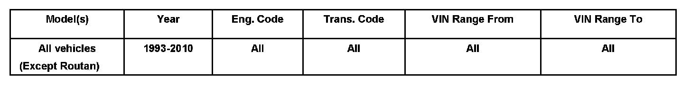
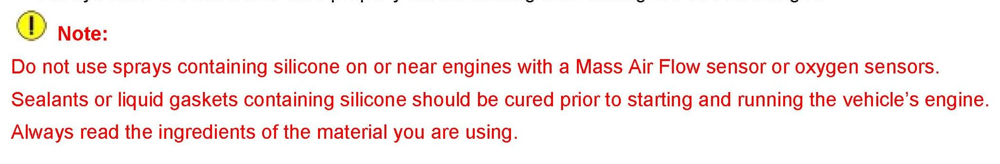

Engine Controls - Silicone Sealer/Lubricant Precautions
00 08 04Aug. 18, 2008
2002412 Supersedes T.B. Group 00 number 07 01 dated Jan. 19, 2007 due to removal of Routan applicability.

Vehicle Information
Condition
Sealants, Liquid Gaskets and Lubricants Containing Silicone
Technical Background
Damage to Mass Air Flow (MAF) sensors and Oxygen sensors may result from use of sealants, liquid gaskets, or lubricants containing silicone.
Production Solution
N/A
Service
Many detailing products contain silicone.
If vehicle engine is running when spraying products which contain silicone (tire dressing, exterior and interior trim cleaner / protectants), silicone may be drawn into the intake system and can contaminate the MAF sensor and/or oxygen sensors.
^ Do not use sprays containing silicone on or near running engines with a Mass Air Flow sensor or Oxygen sensors.
In addition, if using sealants or liquid gaskets containing silicone on or near the engine of a vehicle with a MAF sensor or oxygen sensors:

^ Always allow the silicone to cure properly before starting and running the vehicle's engine.
Warranty
Information only.
Required Parts and Tools
No Special Tools required.
No Special Parts required.
Additional Information
All part and service references provided in this Technical Bulletin are subject to change and/or removal.
Always check with your Parts Dept. and Repair Manuals for the latest information.